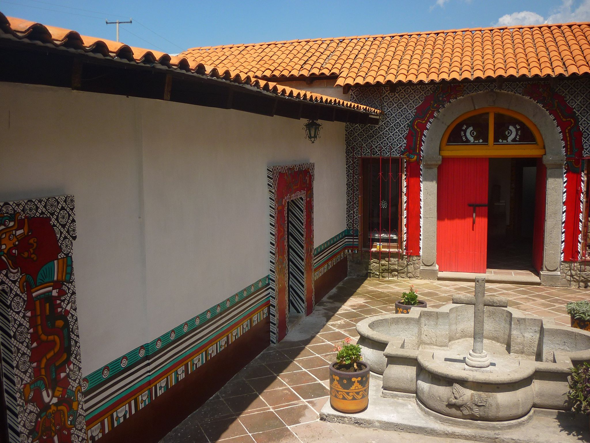
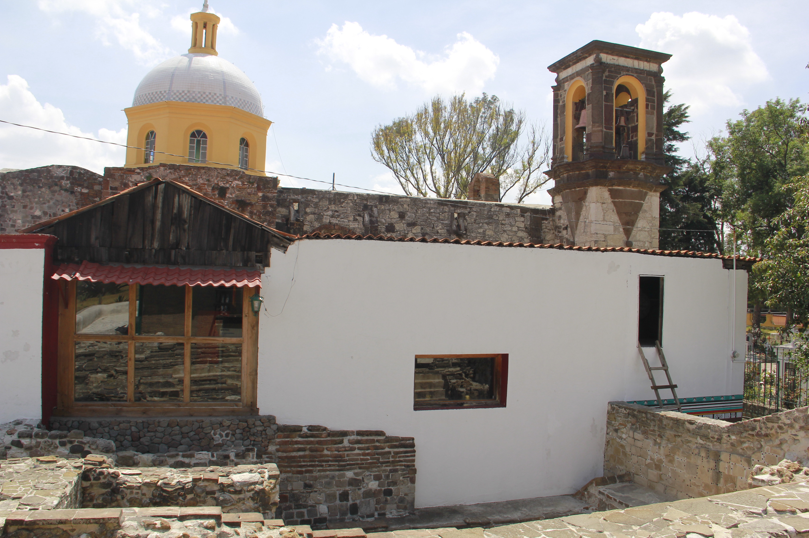

-

Ocotelulco, Tlaxcala
Zona arqueológica
Museo de Sitio
México, 2017
-

Ubicada en el centro del Estado
Un espacio con una gran área verde.
-

Gran acervo
Más de dos mil piezas encontradas en diferentes proyectos
-

INAH, Tlaxcala